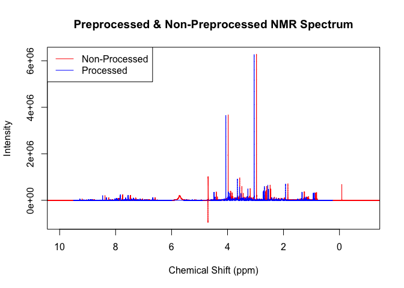

NMRalter8r began as part of my honours project where I was trying to remove the effects of dilution in NMR spectra, especially in urine. Urine concentrations are highly variable based on a number of factors such as food and water intake, lifestyle and behaviour, and this variation interferes with the multivariate statistics used to analyse NMR spectra. Therefore the goal of NMRalter8r is to calculate the signal to noise of the spectra and aims to make this constant across all samples acquired which would remove dilution effects. This is achieved through automating the NMR and calculating on the fly the number of scans needed to remove the effects of dilution.
Installation
Currently NMRalter8r is only available on GitHub. The code to install can be found below.
# install.packages("devtools")
devtools::install_github("kylebario/NMRalter8r")The Whole Game
NMRalter8r is not intended to be used by anyone but the NMR. Ideally, it is installed on the computer of the NMR and then the Jython script that calls on NMRalter8r is extracted from it and saved in Topspin. From there, the file can automate the NMR, controlling everything from the type of experiment performed to the holder position of the sample. This Jython script is what talks to NMRalter8r and what catches the altered number of scans once it is calculated. But there is an intended pipeline to be followed when setting up the script for when Jython parses NMRalter8r the small scans which can be seen below. Feel free to alter it how you wish.
Standard Pipeline
This is the intended pipeline for any altered number of scans calculations:
library(NMRalter8r)
readin(path = system.file('extdata/15', package = 'NMRalter8r'))
plot(p,x, xlim = c(10, -1), type = 'l', col='red', main = "Preprocessed & Non-Preprocessed NMR Spectrum", xlab = 'Chemical Shift (ppm)', ylab = 'Intensity')
legend("topleft", legend = c("Non-Processed", "Processed"), col = c("red", "blue"), lty = 1)
pproc(x, p)
points(p,x, xlim = c(10, -1), type = 'l', col='blue')
cr <- crea(x, p, n, c3 = c(3,3.1), c4 = c(4,4.1))
ans <- alter8r(sig = cr, noi = n, goal = 40000, ns = m$a_NS, r2 = c(4, 512, 2))
cat(ans)
#> 8readin
As you an see, the readin() function reads in the NMR spectrum (red) from the specified path.
pproc
The pproc() function then performs multiple changes to the red spectrum to create the blue spectrum.
- First it calibrates the spectrum to the TSP signal (hence why the blue spectrum is slightly shift to the left).
- Then it removes the lower, water, urea and upper regions of the spectra (hence why the red spectrum is longer and has those extra peaks between 4 and 6) that do not mean anything to the analysis.
- Thirdly, a baseline correction is performed to remove signals from large molecules that we do not want to look at.
- Finally, a noise estimation is calculated for further use in the
alter8r()function as well as others.
This follows the standard pipeline for processing NMR spectra and lays the foundation for robust anaylsis.
crea
The crea() function then estimates the height of the creatinine peak within the spectrum to gauge what the signal is.
alter8r
alter8r() is the keystone function of NMRalter8r (as the name suggests). This function calculates the necessary number of scans need to be performed on a sample to make it have the set signal to noise. The function relies on the square root relationship between signal to noise and the number of scans performed by the NMR.
Features
NMRalter8r is equipped with a range of preprocessing tools designed to overcome a number of issues that commonly occur when working with NMR data.
Flip
A common problem with NMR spectra acquired with a small number of scans is that the processing done by Topspin will flip them the wrong way because the water peak is so much larger than the other peaks. NMRalter8r contains a function – flip() – that checks and corrects for this:
library(NMRalter8r)
readin(path = system.file('extdata/4', package = 'NMRalter8r'))
par(mfrow = c(1,2))
plot(p, x, xlim = c(10, -1), type = 'l', col='red', main = "Disorientated NMR Spectrum", xlab = 'Chemical Shift (ppm)', ylab = 'Intensity')
xf <- flip_(x, p, sh = c(3,3.1))
plot(p, xf, xlim = c(10, -1), type = 'l', col='blue', main = "Orientated NMR Spectrum", xlab = 'Chemical Shift (ppm)', ylab = 'Intensity')
flip() works by multiplying all values within the spectrum by -1 to reorientate it based on whether or not the creatinine peak (or whatever peak is between the supply values in the sh argument) has a positive or negative sum